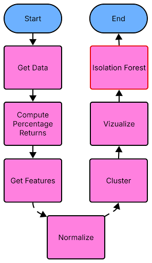
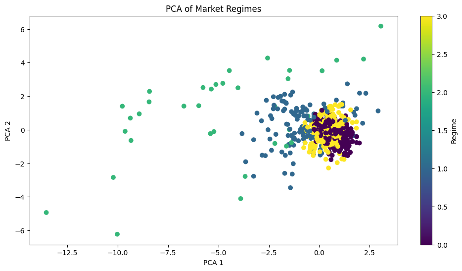
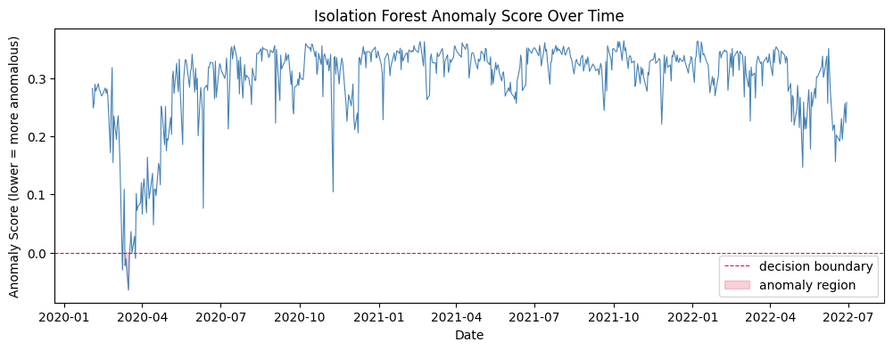
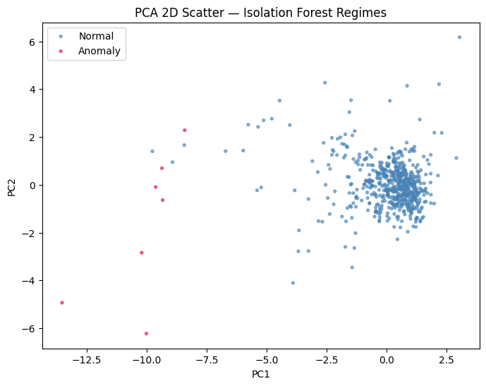

Motivation
The main goal of this project is to use unsupervised machine learning algorithms to detect market regimes in the stock market, periods of time with distinct trends. The most well-known examples are Bull and Bear markets, where the market has a sustained period of continual growth or decline, respectively.
Datasets
- SPY — Large Stocks (S&P 500)
- IWM — Small Stocks (Russell 2000)
- QQQ — Tech Stocks
- TLT — Treasury Bonds
- GLD — Gold
- XLE — Energy
- XLF — Financials
- XLK — Tech Sector
Models
- K-Means Clustering
- Gaussian Mixture Model (GMM)
- HDBSCAN
- Isolation Forest Bonus
Scope
Capture and compare each model's output against known market regimes.
Dataflow & Preprocessing
Data is pulled via the yfinance Python package. The same
preprocessing pipeline is applied across every model, ensuring fair
comparison. Seven features are calculated per trading day using a
20-day rolling window, then standardized via
StandardScaler.

Volatility
Rolling std of returns: how much prices are changing.
Avg Return
Rolling mean return: overall day-to-day direction.
Dispersion
Cross-asset std: how differently individual markets move.
Correlation
Rolling cross-asset correlation: assets moving together or apart.
Equity Bond Spread
Equity returns minus TLT: risk-on vs. risk-off sentiment.
Drawdown
Distance from rolling high: stress indicator.
Vol Change
Day-over-day volatility change: regime transitions.

Results
K-Means Clustering
K-Means partitions market days into k distinct clusters based on feature similarity. The elbow method was used to select the optimal k. The table below shows mean feature values per regime, and future return shows what each regime predicts for the next day.
| Regime | Volatility | Avg Return | Dispersion | Correlation | EQ Bond Spread | Drawdown | Vol Change | Future Return |
|---|---|---|---|---|---|---|---|---|
| 0 | -0.24 | 0.34 | -0.14 | -0.77 | 0.09 | 0.34 | -0.03 | 0.32 |
| 1 | -0.31 | -0.05 | -0.36 | 0.71 | 0.04 | 0.19 | -0.09 | -0.03 |
| 2 | 3.47 | -4.31 | 4.47 | 0.04 | -0.76 | -4.95 | 3.16 | -4.14 |
| 3 | 2.07 | 1.75 | 0.63 | 0.15 | 0.45 | 0.39 | -2.30 | 1.71 |
| 4 | 0.79 | -1.23 | 0.85 | 0.93 | -0.57 | -1.41 | 0.67 | -1.22 |


Gaussian Mixture Model
GMM models each regime as a Gaussian distribution, allowing for soft probabilistic assignments. BIC was used to select the optimal number of components. GMM was found to be the most effective model overall.
| Regime | Volatility | Avg Return | Dispersion | Correlation | EQ Bond Spread | Drawdown | Vol Change | Future Return |
|---|---|---|---|---|---|---|---|---|
| 0 | -0.21 | 0.36 | -0.28 | -0.46 | 0.31 | 0.38 | -0.12 | 0.34 |
| 1 | 0.24 | -0.34 | 0.42 | 0.47 | -0.22 | -0.54 | 0.03 | -0.32 |
| 2 | 3.00 | -1.61 | 2.54 | 0.19 | 0.32 | -2.29 | 0.91 | -1.48 |
| 3 | -0.47 | 0.03 | -0.40 | 0.32 | -0.38 | 0.29 | -0.03 | 0.02 |


HDBSCAN
HDBSCAN is a density-based algorithm that does not require specifying
the number of clusters upfront. Points that don't belong to any
cluster are labeled -1 (noise). Hyperparameters were
tuned via grid search to maximize the silhouette score.
| Regime | Volatility | Avg Return | Dispersion | Correlation | EQ Bond Spread | Drawdown | Vol Change | Future Return |
|---|---|---|---|---|---|---|---|---|
| -1 (noise) | 3.25 | -2.22 | 3.61 | 0.17 | -0.06 | -3.07 | 1.69 | -2.25 |
| 0 | 4.85 | -2.42 | 0.92 | 0.61 | -0.20 | -3.03 | -0.03 | -2.01 |
| 1 | -0.17 | 0.11 | -0.14 | -0.01 | 0.00 | 0.14 | -0.06 | 0.10 |


Bonus: Isolation Forest
Isolation Forest is an anomaly detection algorithm that identifies outlier days by measuring how easily a data point can be isolated from the rest. Unlike the clustering models above, it does not assign regime labels, instead it flags days as normal (1) or anomalous (-1).
This acts as a validation layer on top of the clustering results. Days flagged as anomalies correspond closely to the extreme crisis regimes identified by KMeans, GMM, and HDBSCAN, most notably the March 2020 COVID crash.
How it works
The algorithm builds a forest of random isolation trees. Points that require fewer splits to isolate are considered anomalous, they sit far from the dense normal cluster in feature space.
Key parameter: contamination
Controls what fraction of data is expected to be anomalous. A grid search over contamination (0.01-0.15) and n_estimators (100-300) was used to find the best silhouette score.

The anomaly score over time. Values below the red dashed line (0) are flagged as anomalies. The sharp dip in early 2020 corresponds to the COVID crash.

PCA scatter of all trading days. Red points are anomalies; they sit far left along the Market Stress axis, isolated from the dense normal cluster.
Running the Project
Prerequisites
Make sure you have Python 3 installed, then install all dependencies:
pip install -r requirements.txtLaunching the Notebooks
Start Jupyter from the project directory:
jupyter notebookThen open and run any of the four notebooks:
kmeans_clustering.ipynb
K-Means clustering with elbow method. Prompts you to choose k after viewing the inertia plot.
gmm.ipynb
Gaussian Mixture Model with BIC-based model selection.
hdbscan.ipynb
Density-based clustering with automated hyperparameter grid search.
Isolation Forest
Isolation Forest is automatically run at the end of each notebook above, no separate file needed. The last cells in each notebook will run the anomaly detection and display the PCA scatter and anomaly score plots.
Each notebook is self-contained, data is downloaded automatically via
yfinance when you run it.
Takeaways
What all models agreed on
- A normal regime (low volatility, positive returns)
- A negative / risk-off regime (elevated volatility, negative returns)
- An extreme crisis regime (COVID crash, massive volatility spike)
Model comparison
- GMM, most effective overall
- HDBSCAN, best at handling noise and irregular shapes
- K-Means, simple and interpretable
- Isolation Forest, best for validating extreme events
Regimes are tangible and consistent across models, they are a real property of the market, not an artifact of any single algorithm.